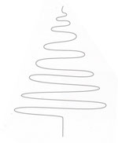

homemade christmas cards

I decided to make my own (cheesy) christmas cards for my family. I have attached the files below so you can edit them yourself. Use A4 or adjust accordingly. For LaTeX, just save the image to the right in the same folder so that it compiles without error.
2016: TeX file PDF output
2017: original image PDF output